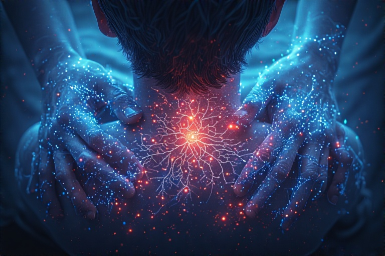

Te simți adesea singur, chiar și atunci când ești înconjurat de oameni? Îți este greu să ai încredere în ceilalți sau să formezi legături profunde și autentice? Simți o lipsă de apartenență sau o deconectare subtilă de cei din jur? Aceste sentimente pot indica un nivel scăzut de oxitocină, "hormonul atașamentului".
Dacă dopamina este motorul motivației și serotonina este uleiul stării de bine, oxitocina este lipiciul care ne unește. Cunoscută și ca "hormonul iubirii" sau "molecula conexiunii", oxitocina este o neuropeptidă – un lanț scurt de aminoacizi – care acționează atât ca hormon în corp, cât și ca neurotransmițător în creier. Este produsă în hipotalamus și eliberată în sânge de către glanda pituitară, dar și direct în anumite zone ale creierului. Rolul său este fundamental în crearea și menținerea legăturilor sociale, de la legătura primordială dintre mamă și copil, la prietenii și parteneriate romantice.
Procesul de producție al oxitocinei este o minune a ingineriei biologice. Spre deosebire de neurotransmițătorii mai simpli, oxitocina este compusă dintr-un lanț specific de nouă aminoacizi. Sinteza sa începe în nucleii paraventricular și supraoptic ai hipotalamusului, "centrul de comandă" al creierului. Aici, este creată sub forma unei molecule precursoare mai mari, numită pro-oxifizină I, care conține atât oxitocina, cât și proteina sa purtătoare, neurofizina I. Acest precursor este apoi "împachetat" în vezicule și transportat de-a lungul axonilor până la glanda pituitară posterioară. Pe parcursul acestui drum, enzimele scindează precursorul, eliberând oxitocina activă. Glanda pituitară acționează ca un depozit, eliberând oxitocina în fluxul sanguin ca răspuns la diverse semnale, precum atingerea sau contactul vizual.
Producția de oxitocină este un proces dependent de un echilibru hormonal și nutrițional complex. Deși oxitocina în sine este o peptidă, sistemul său este modulat de hormoni steroizi, care au ca precursor comun colesterolul. O dietă echilibrată, care include grăsimi sănătoase, este esențială nu doar pentru sănătatea generală, ci și pentru a oferi "materia primă" necesară producerii acestor hormoni reglatori. De asemenea, magneziul joacă un rol crucial, acționând ca un co-factor în numeroase reacții enzimatice și ajutând la calmarea sistemului nervos, creând astfel un mediu propice pentru eliberarea oxitocinei. Lipsa acestor elemente nutritive poate duce la o producție sub-optimală sau la o semnalizare deficitară.
Carența de oxitocină se manifestă ca o dificultate persistentă de a stabili și menține legături emoționale sigure. Pe plan psihologic, acest deficit poate alimenta un cerc vicios: persoana se simte deconectată, ceea ce duce la evitarea interacțiunilor sociale, care la rândul lor ar fi putut stimula producția de oxitocină. Acest lucru poate escalada în anxietate socială, o teamă de vulnerabilitate și o tendință spre interpretarea negativă a intențiilor celorlalți. Fiziologic, un nivel scăzut de oxitocină este asociat cu o reactivitate crescută la stres, o vindecare mai lentă a rănilor și chiar o sensibilitate mai mare la durere, demonstrând cât de profund este integrat acest hormon în starea noastră generală de bine.
Deși este adesea numit 'hormonul iubirii', oxitocina are și o latură mai întunecată, iar un exces sau o semnalizare dereglată poate avea consecințe negative. Oxitocina întărește legăturile din interiorul grupului ('in-group'), dar poate crește simultan suspiciunea și ostilitatea față de cei din afara grupului ('out-group'). Acest mecanism, esențial pentru supraviețuirea tribală în trecut, poate contribui în societatea modernă la prejudecăți, etnocentrism și comportamente defensive. Un nivel excesiv de oxitocină în contexte sociale nepotrivite a fost, de asemenea, asociat cu o sensibilitate crescută la respingere socială, invidie și chiar agresivitate, demonstrând că rolul său este de a amplifica legăturile sociale, fie ele pozitive sau negative.
Iată 8 pași practici pentru a-ți crește natural nivelul de oxitocină:
Pasul 1: Îmbrățișări de calitate
Atingerea fizică este cel mai direct mod de a stimula eliberarea de oxitocină. O îmbrățișare nu este doar un gest simbolic; este un eveniment biochimic. Studiile arată că o îmbrățișare sinceră, care durează cel puțin 20 de secunde, este necesară pentru a declanșa un răspuns hormonal semnificativ. În acest interval, creierul începe să elibereze oxitocină, scăzând ritmul cardiac și tensiunea arterială, și inducând un sentiment de calm și conexiune.
Calitatea este mai importantă decât cantitatea. O îmbrățișare grăbită nu va avea același efect. Este vorba despre intenție și prezență. Fă din îmbrățișări o practică zilnică cu partenerul, copiii sau prietenii apropiați. Acest contact fizic regulat nu doar că reduce stresul pe moment, dar întărește legăturile pe termen lung, creând o buclă de feedback pozitiv: cu cât te simți mai conectat, cu atât vei căuta mai mult contactul fizic, menținând un nivel optim de oxitocină.
Pasul 2: Contact vizual conștient
Ochii sunt, într-adevăr, o fereastră către suflet, dar și un portal pentru eliberarea de oxitocină. Menținerea contactului vizual cu o altă persoană este un act de vulnerabilitate și încredere care stimulează puternic sentimentul de conexiune. Într-o lume a ecranelor și a atenției fragmentate, a privi pe cineva în ochi în timpul unei conversații a devenit un gest rar și prețios. Acest act simplu semnalează creierului că interacțiunea este sigură și importantă.
Nu este nevoie să fixezi pe cineva cu privirea într-un mod inconfortabil. Încearcă să menții contactul vizual pentru câteva secunde în plus față de cât o faci de obicei. Fii atent la culoarea ochilor persoanei cu care vorbești. Această practică, numită și "gazing", poate transforma o conversație superficială într-o conexiune autentică. Este un exercițiu puternic de a construi încredere și intimitate, atât în relațiile noi, cât și în cele existente, stimulând un flux constant de oxitocină.
Pasul 3: Acte de bunătate și generozitate
Oxitocina este strâns legată de comportamentele pro-sociale. Atunci când oferi un cadou, faci un compliment sincer sau ajuți pe cineva fără a aștepta nimic în schimb, creierul tău eliberează oxitocină. Interesant este că acest efect nu se limitează doar la cel care primește gestul; atât cel care oferă, cât și cel care primește (și chiar și cei care observă actul de bunătate) experimentează o creștere a acestui hormon.
Caută oportunități mici de a fi generos în fiecare zi. Poate fi vorba de a lăsa pe cineva în față la coadă, de a oferi un feedback pozitiv unui coleg sau de a dona pentru o cauză în care crezi. Aceste acte nu trebuie să fie mari sau costisitoare. Generozitatea și bunătatea reconfigurează creierul pentru a se concentra pe cooperare și comunitate, în loc de competiție și izolare, creând un mediu intern propice pentru starea de bine și conexiuni umane sănătoase.
Pasul 4: Ascultare activă și empatică
A te simți cu adevărat ascultat și înțeles este una dintre cele mai puternice experiențe umane de validare și conexiune. Ascultarea activă și empatică – adică a fi complet prezent pentru cealaltă persoană, fără a întrerupe, a judeca sau a pregăti următorul tău răspuns – este un catalizator puternic pentru eliberarea de oxitocină în ambii participanți la conversație. Este un act de a oferi întreaga ta atenție.
Practică ascultarea empatică punând telefonul deoparte, orientându-te cu corpul spre interlocutor și reflectând ceea ce auzi pentru a te asigura că ai înțeles corect ("Deci, ceea ce spui este că te-ai simțit..."). A valida emoțiile cuiva ("Înțeleg de ce te-ai simțit așa") creează un spațiu de siguranță psihologică care întărește legăturile și construiește încredere. Această formă de generozitate emoțională este la fel de importantă ca și cea materială pentru un sistem nervos echilibrat.
Pasul 5: Interacțiunea cu animale de companie

Legătura dintre oameni și animale este un exemplu pur de atașament bazat pe oxitocină. Studiile au demonstrat că mângâierea unui câine sau a unei pisici, sau chiar simplul contact vizual cu un animal de companie, duce la o creștere semnificativă a nivelului de oxitocină atât la om, cât și la animal. Această interacțiune necondiționată și non-verbală activează aceleași căi neuronale ca și legăturile umane.
Dacă ai un animal de companie, petrece timp de calitate cu el în fiecare zi. Dacă nu ai, poți beneficia de acest efect făcând voluntariat la un adăpost de animale sau petrecând timp cu animalele prietenilor. Această formă de conexiune simplă și pură este o modalitate excelentă de a combate sentimentele de singurătate și de a-ți oferi o doză zilnică de "hormon al iubirii", reducând stresul și crescând sentimentul general de fericire.
Pasul 6: Masaj și atingere caldă
Masajul este o formă intensă de stimulare a oxitocinei. Presiunea blândă și constantă aplicată pe piele activează receptorii nervoși care trimit semnale de calm și siguranță către creier. Nu este necesar să fie un masaj profesionist; chiar și un masaj de 15 minute la umeri sau la mâini, oferit de un partener sau un prieten, poate avea efecte profunde, reducând cortizolul și crescând atât oxitocina, cât și serotonina.
Poți practica și auto-masajul, concentrându-te pe zone precum ceafa, mâinile sau picioarele. Folosirea unei loțiuni sau a unui ulei cald poate amplifica senzația de confort. O baie caldă sau folosirea unei pături grele sunt alte modalități de a simula presiunea blândă și constantă, activând sistemul nervos parasimpatic și promovând eliberarea de oxitocină. Aceste practici sunt deosebit de utile seara, pentru a te relaxa și a te pregăti pentru un somn odihnitor.
Pasul 7: Experiențe comune și ritualuri
Oxitocina este eliberată atunci când ne simțim parte dintr-un grup care lucrează pentru un scop comun. Participarea la activități de grup sincronizate, cum ar fi cântatul într-un cor, dansul, practicarea unui sport de echipă sau chiar participarea la un ritual religios, creează un sentiment puternic de coeziune și apartenență. Mișcarea sau sunetul sincronizat semnalează creierului că "suntem împreună în asta".
Creează mici ritualuri de conexiune în viața ta. Poate fi vorba de a lua cina în familie fără telefoane, de a avea o seară de jocuri de societate cu prietenii sau de a participa la un club de carte. Aceste experiențe comune regulate întăresc legăturile sociale și construiesc o rețea de sprijin solidă. Sentimentul de a aparține unui "trib" este o nevoie umană fundamentală, iar satisfacerea ei este o sursă constantă și puternică de oxitocină.
Pasul 8: Meditația iubirii-bunătății (Metta)
Poți stimula eliberarea de oxitocină chiar și în absența altor persoane, prin practici meditative care cultivă sentimente de căldură și compasiune. Meditația Metta, sau a iubirii-bunătății, este o tehnică specifică în care îți direcționezi în mod activ gânduri pozitive și urări de bine către tine însuți, către cei dragi, către persoane neutre și, în final, către toate ființele.
Această practică activează circuitele cerebrale asociate cu empatia și emoțiile pozitive, stimulând eliberarea de oxitocină. Începe prin a repeta în gând fraze precum: "Fie ca eu să fiu fericit. Fie ca eu să fiu sănătos. Fie ca eu să fiu în siguranță." Apoi, extinde treptat aceste urări către ceilalți. Este un antrenament mental care schimbă perspectiva de la una critică la una plină de compasiune, crescând sentimentul de conexiune cu lumea și reducând anxietatea socială.